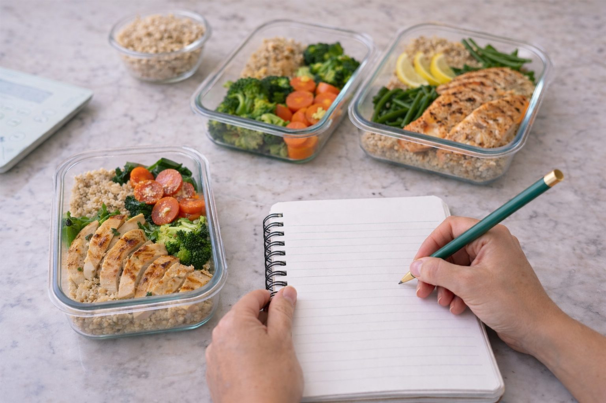

Estratégia para resultados reais e sustentáveis.
Emagrecimento, bariátrica, performance e reeducação alimentar com acompanhamento individualizado por quem tem mais de 20 anos de experiência.
Avaliação máxima dos pacientes
Você sente que está em um ciclo sem fim?
Muitas pessoas enfrentam os mesmos desafios antes de encontrarem o acompanhamento certo.
Efeito Sanfona
Cansada de perder peso e recuperar tudo logo em seguida por causa de dietas restritivas.
Insegurança na Bariátrica
Medo de não se adaptar ao pós-operatório ou de não ter o resultado esperado na cirurgia.
Rotina Caótica
Dificuldade em manter uma alimentação saudável com a correria do dia a dia real.
A nutrição que você precisa para a vida que você deseja.
Meu objetivo é te dar autonomia. Sem terrorismo nutricional, com foco em constância e resultados que permanecem.
-
Emagrecer com saúde e sem radicalismos.
-
Segurança total no pré e pós-operatório bariátrico.
-
Estratégia nutricional aplicável ao seu dia a dia.
-
Melhora da performance e relação com a comida.
Como posso te ajudar
Soluções personalizadas para diferentes momentos da sua jornada de saúde.
Emagrecimento
Foco em perda de gordura com preservação de massa magra e mudança de comportamento.
Saiba maisNutrição Bariátrica
Acompanhamento especializado para todas as fases: preparo, pós-imediato e longo prazo.
Saiba maisPerformance
Estratégias para otimizar seus treinos, melhorar a composição corporal e ter mais energia.
Saiba maisReeducação Alimentar
Melhore sua relação com a comida e aprenda a comer de tudo com equilíbrio e consciência.
Saiba maisConsulta Online
A mesma qualidade do atendimento presencial no conforto da sua casa, onde quer que você esteja.
Saiba maisAtendimento Presencial
Consultórios modernos e acolhedores no Centro, Botafogo e Tijuca (Rio de Janeiro).
Ver locais
Sua jornada passo a passo
Avaliação Individual
Análise profunda do seu histórico, exames, rotina e objetivos específicos.
Estratégia Personalizada
Plano alimentar e orientações práticas desenhadas para a sua realidade.
Acompanhamento Contínuo
Ajustes constantes conforme sua evolução e suporte para manter a constância.
Resultados Sustentáveis
Conquista dos seus objetivos com saúde e autonomia alimentar definitiva.
"Meu foco é a sua constância, não a sua perfeição."
Juliana Pandini
Sou nutricionista clínica com mais de 20 anos de experiência, dedicada a transformar a vida das pessoas através de uma alimentação consciente e baseada em evidências científicas.
Meu trabalho é focado em soluções práticas para a vida real. Acredito que a nutrição deve ser acolhedora e individualizada, longe de dietas restritivas ou promessas milagrosas que não se sustentam.
Ao longo da minha carreira, especializei-me em emagrecimento, cirurgia bariátrica e performance, ajudando centenas de pacientes a alcançarem sua melhor versão com equilíbrio e saúde.
+20
Anos de Prática
5.0
Avaliação Google
Onde nos encontramos
Escolha a unidade mais próxima de você ou opte pelo atendimento online.
.jpeg)
O que dizem meus pacientes
“Hoje sou uma pessoa mais feliz, ativa e consciente das minhas escolhas. O acompanhamento da Juliana mudou minha visão sobre comida.”
— Maria S.
“Uma consulta acolhedora, sem pressa, com muita atenção e conhecimento técnico. Me senti segura em todo o processo da bariátrica.”
— Ricardo F.
“Profissional humanizada, sem neuras, torna o processo de emagrecimento leve e possível no dia a dia. Recomendo muito!”
— Ana Paula L.
Dúvidas Frequentes
Tudo o que você precisa saber sobre o atendimento.
Ambos! Atendo presencialmente em três unidades no Rio de Janeiro (Centro, Botafogo e Tijuca) e também realizo consultas online via vídeo para pacientes de qualquer lugar do mundo.
Sim, sou especialista em nutrição bariátrica. Acompanho pacientes desde o preparo para a cirurgia até o pós-operatório tardio, garantindo a saúde nutricional e o sucesso do procedimento.
Não. Embora o emagrecimento seja uma demanda comum, também trabalho com performance esportiva, reeducação alimentar, melhora da relação com a comida e saúde clínica geral.
O acompanhamento é totalmente individualizado. Na primeira consulta, fazemos uma avaliação completa e traçamos a estratégia. Nas consultas de retorno, avaliamos a evolução e fazemos os ajustes necessários.
O agendamento é feito de forma simples e rápida pelo WhatsApp (21 96911-0022). Basta clicar em qualquer botão de agendamento aqui no site.
Pronta para transformar sua saúde com equilíbrio?
Agende sua consulta agora e comece sua jornada com quem entende de resultados reais.
Resposta rápida em horário comercial